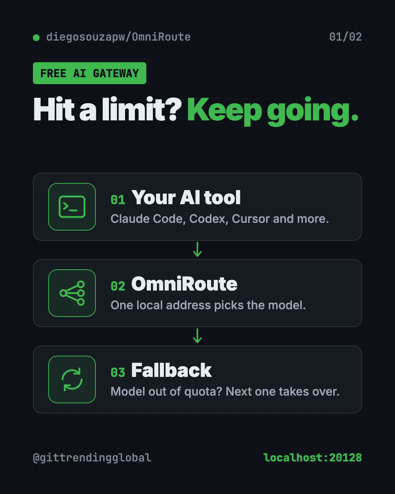
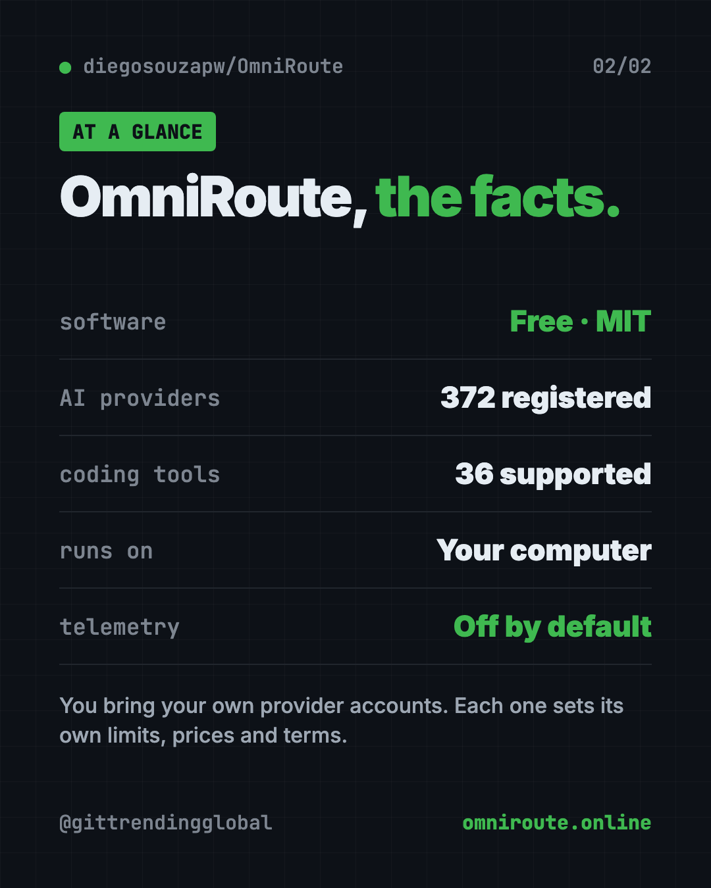

OmniRoute: Free AI Gateway for Claude Code and Codex (2026)
OmniRoute is a free AI gateway that links your coding tools to many AI providers through one address, and switches to another model when one runs out.
OmniRoute is a free AI gateway that runs on your own computer. You point Claude Code, Codex, Cursor or other AI tools at one address, and it sends each request to a model you've connected, switching to another when one hits a limit.
That means fewer "usage limit reached" stops in the middle of your work. Here's how it works, real ways to use it, and the exact setup steps.
Key takeaways
- Free and open source. MIT license, about 76.9K stars on GitHub.
- One address for many models. The README lists 372 registered AI providers.
- Automatic fallback. If a model runs out of quota or fails, it can move to the next one you've connected.
- Runs on your machine. The makers say there's no hosted middle step, and telemetry is off by default.
- You bring the accounts. OmniRoute doesn't give you free AI. It helps you use the accounts and free tiers you sign up for.
What is OmniRoute?
Picture a power strip for AI. Instead of plugging each AI tool straight into one company, you plug them all into OmniRoute. OmniRoute is plugged into many AI companies at once.
The makers call it "The Free AI Gateway." A gateway is a middleman. Your coding tool talks to OmniRoute at one local address. OmniRoute picks a model, sends your request, and passes the answer back.
The magic is in what happens when something goes wrong. Your favorite model hits its limit. A provider has an outage. Prices jump. OmniRoute can quietly move to the next model on your list, so your work keeps going.
It was started by GitHub user diegosouzapw, now has hundreds of contributors, and lives on GitHub. The latest version in the README is v3.8.52.

How does OmniRoute pick a model?
The easy way is to set your model to auto. OmniRoute then builds a list from the providers you've connected and scores them live.
You can also tell it what you care about most:
- auto/coding puts quality first for writing code.
- auto/fast picks the quickest model.
- auto/cheap picks the lowest price per token. A token is a small chunk of text, and it's how AI is priced.
- auto/subscription only uses plans you already pay for, and never falls back to a paid one.
Want full control? You can build your own chain of models, called a "combo." The README says there are 19 routing strategies to pick from.
How to use OmniRoute (real examples)
- Keep coding past a limit. Your Claude plan runs out mid-project. OmniRoute moves to another model you connected, and Claude Code keeps working.
- Use one setup for every tool. Claude Code, Codex, Cursor, Cline and Aider all point at the same address. You manage keys in one dashboard.
- Try a new model fast. Run
omniroute run codex --model glm/glm-5.2to launch Codex with a different model, without editing config files. - Stretch a small budget. Students can connect a few providers' free tiers and let
auto/cheapchoose. - Cut token use. OmniRoute can shrink what's sent to the AI. The makers claim 15% to 95% savings on eligible work, using ideas from tools like RTK and Caveman.
💡 Tip: Start with one or two providers you already use. Add more once you see how fallback works.
Is OmniRoute really free?
The software is free under the MIT license. The AI models are a different story.
The README is clear about this: "Bring your own provider accounts." You sign up with each AI provider yourself. Each one sets its own limits, prices and terms. The makers estimate about 1.62 billion tokens a month across third-party free tiers, but stress that this is not a grant from OmniRoute. Some free tiers need a signup, approval or a card.
The README marks 154 of its 372 providers as having some kind of free option. Those change often, and the makers say they re-check the list every two weeks.
Which AI tools work with OmniRoute?
The README lists 36 tools. A few of the best known:
- Claude Code
- Codex CLI
- Cursor CLI
- Cline, Kilo Code and Continue
- Aider
- OpenCode
- GitHub Copilot CLI
- Hermes Agent and OpenClaw
Any tool that can talk to an "OpenAI-compatible" address should work too. That's a common standard many AI apps follow.

How to install OmniRoute
These are the steps from the README. You need Node.js version 22.22.2 or newer. Get it free from nodejs.org.
Step 1: install and start it. Open Terminal (Mac or Linux) or PowerShell (Windows). Copy and paste this:
npm install -g omniroute
omniroute
The dashboard opens at this address:
http://localhost:20128
⚠️ Heads up: On npm 11 or newer, the install may be blocked with a warning about scripts. The README gives a longer command that allows the packages named in that warning. Read the warning first, and only allow what it lists.
Step 2: connect a provider. In the dashboard, go to Providers. Pick one whose terms fit what you want to do, then add its API key or sign in. An API key is a password-like code that lets an app use your account.
Step 3: point your coding tool at OmniRoute. In your tool's settings, use these values:
Base URL: http://localhost:20128/v1
API Key: [copy from Dashboard → Endpoints]
Model: auto
Step 4: check it works. Copy and paste this, swapping in your key:
curl http://localhost:20128/v1/models -H "Authorization: Bearer YOUR_KEY"
You should see your connected models listed. The README also covers Docker, a desktop app, and a Mac menu-bar app.
⚠️ Heads up: Only connect accounts in ways their owners allow. The README itself flags some providers as "tos: avoid," meaning their terms may not allow this kind of use, and leaves them out of
autoby default.
Let Claude or Codex set it up for you
Claude Code and OpenAI Codex are AI helpers that can run setup steps on your computer. You paste a request, it does the steps, and you approve each one.
Copy and paste this:
Please help me set up OmniRoute from github.com/diegosouzapw/OmniRoute.
1. Check that I have Node.js 22.22.2 or newer. If not, tell me how to get it.
2. Install it with "npm install -g omniroute" and start it.
3. Open the dashboard at http://localhost:20128 and walk me through adding one provider I already have an account with.
4. Show me how to point Claude Code at http://localhost:20128/v1 with model "auto".
5. Run the README's curl check to confirm my models show up.
Then try asking:
Set up an OmniRoute combo that uses my paid plan first, then a cheaper model when it runs out.
Read OmniRoute's Free Tiers Guide and tell me which free tiers fit my use, and their terms.
Use "omniroute run" to launch Codex with a different model, and explain what it changed.
OmniRoute at a glance
| Price | Free software; you pay providers per their own plans |
| Works offline | Only with local models; cloud models need internet |
| Platforms | Mac, Windows, Linux (npm, Docker or desktop app) |
| License | MIT (open source) |
| GitHub stars | About 76.9K |
| Providers | 372 registered, 154 marked with a free option |
| Best for | People who use several AI coding tools and hate hitting limits |
Our take
OmniRoute solves a real headache: juggling keys, dashboards and limits across many AI tools. The auto mode and fallback chains mean fewer stalls mid-task.
What we like:
- One local address for dozens of tools.
- Fallback keeps you working when a model runs out.
- Telemetry is off by default, and keys are encrypted on your machine.
- Clear, honest notes on what "free" means.
- Very active, with hundreds of contributors.
What to watch for:
- It's a big, busy project. The dashboard has a lot of options for a beginner.
- You still manage your own accounts and their rules.
- Free tiers come and go, so your free setup may change.
- The token savings are the makers' own numbers.
If token costs are your main worry, see Caveman, a free way to cut Claude Code token use, RTK, which shrinks what your AI has to read, or Headroom, for a smaller token bill. OmniRoute was also in our top 5 GitHub repos of July 2026.
FAQ
What is a free AI gateway?
It's a program that sits between your AI tools and AI providers. Your tools talk to one address, and the gateway picks which model answers.
Is OmniRoute free to use?
The software is free and open source under MIT. The AI providers you connect set their own prices, limits and free tiers.
Does OmniRoute work with Claude Code and Codex?
Yes. Both are on the README's list of 36 compatible tools. You point them at http://localhost:20128/v1.
Does OmniRoute send my prompts to its own servers?
The makers say no. It runs on your machine and sends each prompt only to the provider it picked. Telemetry is off by default.
What happens when a model hits its usage limit?
With auto or a combo, OmniRoute can move to the next healthy model you've connected, so your tool keeps working.
Get OmniRoute: github.com/diegosouzapw/OmniRoute
Follow @gittrendingglobal on Instagram for one free, useful tool every day.
📲 Watch the 30-second video on Instagram
Keep reading

DBX: Free Database Client for 100+ Databases, With AI (2026)
DBX is a free database client that opens 100+ kinds of databases in a 25 MB app. Its AI helper turns plain English into database queries for you.

PureMac: Free CleanMyMac Alternative, No Subscription
PureMac is a free CleanMyMac alternative. It clears junk, fully uninstalls apps and finds duplicates, with no subscription, no tracking and no scare tactics.

Strata: Run Big Local AI on a Gaming PC, Free
Strata is a free installer that runs big, private local AI on a gaming PC. It sets up a large Qwen model, so your chats never leave your computer.